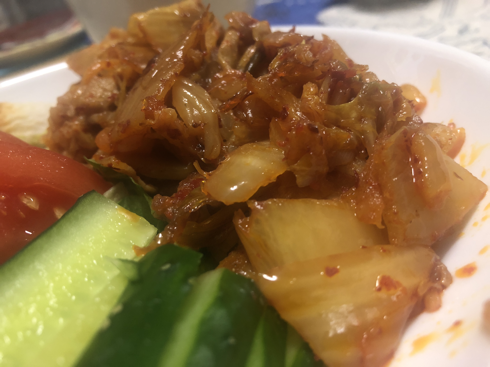

今年度ラスト90日くらいの予定が大体決まりました
↑美味しかったので載せただけ
どうもこんばんは。今日は今年度ラスト３ヶ月の予定について。
１月
1月18日のどっかしらの時間に、我らがN-Pointの笹塚事務所から放送される「2020年忘（？）年会」に出演します。
当日何かしらのことを喋ります。お楽しみに。
一週間後の1月25日、ちょっとしたテスト配信を行います。OBSの限界に挑もうかなーと。
また、様々な準備でちょっと浮上が少なくなるかも...?
２月
2月24日、FinGATE KAYABAでプログラミングLT 2020Winterが開催されます！
こちらに私が出場します。こちらではどっちかっていうとネットに生きてきた人生の振り返りになりますね。
久々に私の愛機ことMacBook Airが人目の前に現れます。これといった変化はないですが。
３月
立ち絵を描いてちょっとしたゲーム実況動画でも作ります。
かなり久々な上にシリーズの流れをぶった切っていますが、それでもよろしければぜひ...
内容としては1.12.2工業環境で地下引きこもり生活にする予定です。
とまあ、こんなもんです。今年度ラスト三ヶ月、どうぞよろしくお願いします。
Tweet
記事一覧に戻る
Consoles